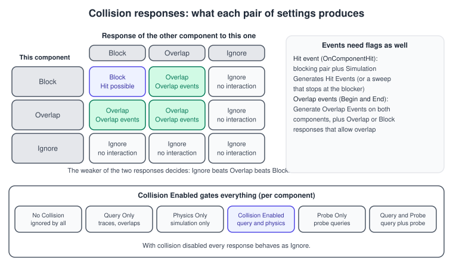
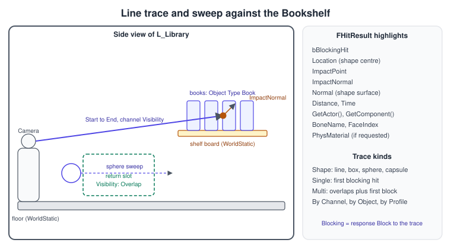
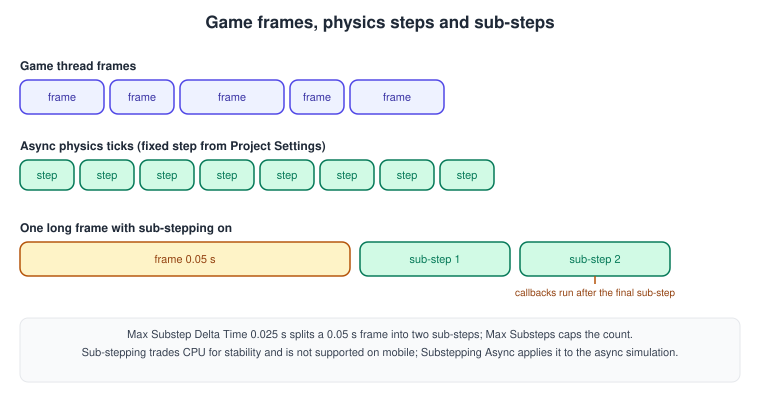
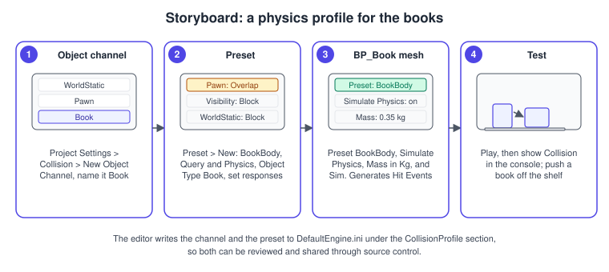

Chaos Physics and Collision
|
This content was generated with the assistance of AI and should be verified against the official documentation before being relied on in production. |
Physics is what lets the Bookshelf behave like a room instead of a painting. A book that is pushed off a shelf falls and lands, a return slot on the desk notices when a book arrives, the player’s crosshair finds the book it is pointing at, and a cabinet door swings on its hinge. In Unreal Engine all of this rests on two ideas that are easy to confuse. Simulation is the physics solver moving bodies under forces and contacts; collision is the set of rules that decides which bodies and queries interact, and what the interaction does. A body can collide without being simulated (a wall), be simulated without a character ever touching it, and be asked questions (traces) without taking part in the simulation at all.
The facts on this page were checked in November 2026 against the Unreal Engine 5.8 documentation (5.8 was released on 2026-06-17, and the latest hotfix found is 5.8.4). Chaos is the default physics system of Unreal Engine 5, replacing PhysX, and runs in the editor on Windows, macOS and Linux and in packaged builds on every platform Unreal targets; limits per platform
are stated where they matter (sub-stepping is not supported on mobile). In the running example, the books are ABookActor instances with a Static Mesh Component, shelves are AShelfActor, the player is ABookshelfCharacter and the level is L_Library; the model is the shared bookshelf.glb. The engine-neutral theory
(rigid bodies, broad and narrow phase, solvers) is in Physics, Audio and Input Basics; this page is the Unreal-specific half. The Unity counterpart is 3D Physics.
Chaos Physics at a glance
Chaos is Epic’s lightweight physics and destruction system. Epic’s documentation groups its areas as follows:
| Area | What it covers |
|---|---|
Rigid body dynamics |
Collision responses, physics constraints, damping and friction, asynchronous simulation and networked physics. This is what the first half of the page is about. |
Chaos Destruction |
Geometry Collections that can be fractured, per-cluster damage thresholds, Connection Graphs, caching and Niagara integration. |
Physics Fields |
Regions that apply force, break clusters or anchor and disable fractured bodies; materials and Niagara can sample fields too. |
Character physics |
Ragdolls and the Physical Animation component, set up with the Physics Asset Editor. |
Chaos Vehicles |
Wheeled and other vehicles with any number of wheels, gears, aerofoil surfaces and thrust forces, using asynchronous physics. |
Cloth, hair, flesh, fluids |
Chaos Cloth, strand-based hair simulation, soft-body flesh simulation and fluid simulation, several of which use the Dataflow graph for authoring. |
Tools |
The Chaos Visual Debugger records a simulation and replays it frame by frame or sub-step by sub-step. |
The Unreal Engine 5 migration guide states that UE5 uses Chaos by default in place of PhysX, that simulation behaves differently so projects may need adjustments, and that for newly created projects the physics tick rate changes by default and is configurable with Tick Async Physics in the Project Settings. Physics then runs on its own thread instead of the game thread, which improves determinism and network synchronisation but can add a delay between input and physics response.
Physics bodies
A physics body is the physics representation of a primitive component (a Static Mesh Component, a Skeletal Mesh bone, a Box Component). The body has collision shapes, a mass and damping, and a Physics Type. These are the properties that matter most, as listed in Epic’s Physics Bodies reference:
| Property | What it does |
|---|---|
Physics Type (Simulate Physics) |
Simulated means the solver moves the body; Kinematic means physics does not move it but it still interacts with simulated bodies (a door you move yourself); Default inherits the setting from the owner component. |
Mass in Kg, Mass Scale, Update Mass when Scale Changes |
The mass in kilograms, a per-instance scale, and whether mass is recomputed when the component is scaled. If you do not set it, the mass comes from the shapes' volume and the Physical Material density. |
Linear Damping, Angular Damping |
Drag forces that reduce linear and rotational movement. Use small values to stop endless sliding or spinning. |
Enable Gravity |
Whether gravity applies to the body. |
Use CCD |
Continuous collision detection for the component, so fast bodies do not tunnel through thin geometry. It costs more, so enable it only on the bodies that need it. |
Start Awake, Sleep Family, Custom Sleep Threshold Multiplier, Generate Wake Events |
Whether the body starts awake, how soon it falls asleep (Normal, Sensitive or Custom; with Custom a higher multiplier means sooner sleep), and whether wake and sleep events fire. Sleeping bodies cost almost nothing, which is why a settled pile of books is cheap. |
Rest Offset (contact offset) |
An offset used when generating contact points, which helps objects slide smoothly over small irregularities. |
Simple Collision Physical Material, Phys Material Override |
The Physical Material encodes density, friction and other properties; the override replaces it for one body. |
Collision Complexity, simple and complex collision |
Simple collision uses primitives (spheres, boxes, capsules, tapered capsules, convex elements) and is what simulated bodies use. Complex collision is per-polygon and is usually used for queries and static geometry. Epic keeps the two separate by default. |
A simulated body must have collision (a body with no shapes falls through everything), and a simulated convex shape is far cheaper than a concave one. For the Bookshelf the book uses a single box, set up in the Static Mesh editor (Collision > Add Box Simplified Collision) or generated from the model.
Source: Physics Bodies Reference
The collision model
Every collidable primitive has an Object Type (also called an object channel), such as WorldStatic, WorldDynamic, Pawn, PhysicsBody, Vehicle, Destructible, or a custom one like Book. It also has a response to every other object type and to every trace channel: Block, Overlap or Ignore. Both sides of an interaction are consulted, which is why the matrix below has two axes.

The interaction rules, as Epic states them:
-
Two simulating objects block each other only if each is set to block the other’s object type.
-
If one object overlaps and the other blocks, an overlap occurs but no block.
-
If one object ignores and the other overlaps, no overlap events fire.
-
Overlap events can still fire alongside a block, especially at high speed. Epic advises against using both collision and overlap events on the same object.
-
A trace has its own response type (its channel), and an actor blocks or ignores the trace according to its Trace Responses.
-
Collision Enabled has to be on for any of this to apply. With collision disabled, every response behaves as Ignore.
Collision Enabled modes
The per-component Collision Enabled property filters a primitive in and out of simulation and queries without changing its response settings. The documentation lists these options: No Collision, Query Only (traces and overlaps, no physics collision), Physics Only (simulation, no queries), Collision Enabled (query and physics, in code ECollisionEnabled::QueryAndPhysics), Probe Only and Query and Probe.
Use Query Only for volumes and triggers that must be found by traces and overlap tests but must not push anything; use Physics Only for bodies that should be simulated but never picked by a trace.
Presets (collision profiles)
A collision preset bundles an Object Type, a Collision Enabled mode and a full set of responses under a name. Default presets include BlockAll, OverlapAll, OverlapAllDynamic, Pawn, PhysicsActor, Trigger and others; you add your own in Project Settings > Engine > Collision > Preset. Components choose a preset in their Collision Presets dropdown, and in code with SetCollisionProfileName.
Prefer presets over per-component response tweaks: a change to the preset changes every component that uses it, and a profile name is easy to review. Epic warns that changing a preset already in use can change collision behaviour.
Custom channels
Project Settings > Collision has three sections: Object Channels (the object types of your project), Trace Channels and Preset. A project can have up to 18 custom channels, counting object and trace channels together. Deleting an object type that the game uses reverts its uses to WorldStatic; deleting a trace channel that the game uses leaves the behaviour of that trace undefined.
A new trace channel has a Default Response of Block, Overlap or Ignore; choose it carefully to avoid adjusting the profile of every actor later. The Python reference recommends defining custom channels with a #define in local code and configuring them in DefaultEngine.ini, which is what the C++ example below does.
Hit events and overlap events
Block and Overlap describe what the physics system does; events are how your code finds out. They have different requirements, and confusing them is the most common collision bug.
| Aspect | Hit event | Overlap event |
|---|---|---|
Blueprint events |
Event Hit, |
|
Response needed |
The pair blocks. |
The pair overlaps (or a block that also allows overlap). |
Flag needed |
Simulation Generates Hit Events on at least one of the components. A sweep that stops at a blocker also produces the event without the flag. |
Generate Overlap Events on both components. Without it, Overlap behaves like Ignore. |
Fires |
On contact; resting contact can fire repeatedly, so filter the events in code (for example by impulse size). |
Only when an overlap starts or ends. |
Typical use |
Impact sounds, damage, "the book hit the floor". |
Triggers, pickup zones, the return slot. |
Two testing notes from the documentation help avoid false alarms. The default Play In Editor camera is a pawn, so it can be blocked by anything that blocks pawns; the Simulate in Editor camera before possession is not a pawn and passes through everything without events.
Traces and overlap queries
A trace (a raycast) asks the physics scene a question without simulating anything: does a shape swept from here to there touch anything, and what? The documentation describes the options along three axes.

-
Shape: a straight line (a ray), or a box, sphere or capsule that is swept along the path (a sweep). A sweep finds things a thin ray would slip past, such as a gap between two books.
-
Single or multi: a single trace returns one hit result (the first blocking hit); a multi trace returns every hit along the path, including overlaps, ending at the first blocking hit.
-
By channel, by object or by profile: a channel trace returns objects that respond to the trace channel you name (Visibility, Camera or a custom one), a by object trace matches the object types you list, and a profile trace uses a named collision profile.
In Blueprint the nodes are Line Trace By Channel, Line Trace For Objects, Sphere Trace By Channel and their multi variants; in C++ the functions are members of UWorld. Epic’s step-by-step example runs the trace on Event Tick from the camera, extends the forward vector by 1500 units and sets Draw Debug Type to For One Frame. The node parameters are Start, End,
the Trace Channel, Trace Complex, Actors to Ignore, Draw Debug Type and Ignore Self, and the output is Out Hit (broken apart with Break Hit Result) and a boolean return value.
C++ function (on UWorld) |
Use |
|---|---|
|
First blocking hit of a ray on a trace channel. The workhorse for picking and line of sight; |
|
All hits along the ray, ending at the first block. |
|
A swept |
|
Same by object type, using an |
|
A static shape test at one place, with no motion: "which books are within 1 m of this point". |
The extra parameters live in FCollisionQueryParams: bTraceComplex (test per-polygon geometry), AddIgnoredActor and AddIgnoredComponent, bReturnPhysicalMaterial (fill PhysMaterial in the hit) and a trace tag for the debugger. FHitResult carries bBlockingHit, Location (the shape’s position at impact), ImpactPoint (the point on the surface), ImpactNormal (the surface normal), Normal (for sweeps, the normal on the swept shape), Distance, Time,
GetActor(), GetComponent(), BoneName, FaceIndex and PhysMaterial.
Physics constraints
A physics constraint is a physical joint that connects two simulated rigid bodies, or one body and the world. A Physics Constraint Component is placed in an actor and told which two components to join; in a Physics Asset the constraints between bones are created by the Physics Asset Editor. The 5.8 reference lists these properties:
| Group | Properties |
|---|---|
Constraint |
The two actors (and optionally components) to join; in the Physics Asset Tool, bone names identify the constrained joints. |
Constraint Behavior |
Disable Collision stops the two bodies colliding with each other. Linear and Angular Projection correct leftover joint error after the solve, which stiffens chains at low iteration counts, but work poorly if the chain interacts with other objects. Shock Propagation adds mass to the parent in the final solver iteration to stiffen chains and suits world constraints and ragdolls. Parent Dominates keeps the parent unaffected by the child. |
Linear Limits |
Each of X, Y and Z is Free, Limited or Locked; Limit is the allowed distance. Advanced options add a soft constraint (stiffness, damping, restitution), a linear break threshold and linear plasticity. |
Angular Limits |
Swing 1, Swing 2 and Twist are each Free, Limited or Locked, with their own angle values. Advanced options add soft constraints, an angular break threshold and angular plasticity. A hinge is one free or limited axis with the other two locked. |
Linear Motor |
A position target or velocity target with a Strength; advanced adds Max Force. |
Angular Motor |
SLERP mode (fails if any angular axis is locked) or Twist and Swing mode; drives toward a target orientation or angular velocity with strength and max force. |
Constraints are cheap compared with a full ragdoll but not free: each is solved every step, and long chains need more solver iterations or projection to stay stiff. Use breakable constraints for doors that can be torn off and motors for powered hinges.
Physics components
Besides the constraint, Epic provides small components that act on physics bodies:
-
Physics Handle Component: lets the player grab and move a simulated object while it keeps simulating, as in a gravity gun. It is the natural way to pick up and carry a book (see the example below).
-
Physics Thruster Component: applies a continuous force along the component’s X axis; it can start automatically or be toggled by script.
-
Radial Force Component: emits a fire-and-forget radial force or impulse, for example to push debris outwards when a destructible object breaks.
-
Physical Animation Component: adds physics simulation to groups of bones of a Skeletal Mesh while its animation plays.
Simulation: sub-stepping and the async physics tick

By default, physics steps at a fixed rate on its own thread: the async physics tick (see Tick Async Physics above). Game code that runs on the game thread therefore sees the result of earlier steps. Where a fixed step is still too coarse (ragdolls, complex Physics Assets that jitter), sub-stepping splits each frame’s update into smaller simulation steps. Enable it in Edit > Project Settings > Physics:
| Setting | Meaning |
|---|---|
Substepping |
Turns sub-stepping on for the project. |
Substepping Async |
Whether the async physics simulation is sub-stepped too. |
Max Substep Delta Time |
The longest duration of one sub-step. A 0.05-second frame with a 0.025 maximum becomes two sub-steps; smaller values are more stable and cost more CPU. |
Max Substeps |
The cap on sub-steps per frame; a very long frame is divided across this cap rather than creating as many sub-steps as the time would need. |
Max Physics Delta Time |
Bounds the length of one physics step, and so indirectly the sub-stepping work. |
Consequences to plan for: forces and target locations are carried across all sub-steps, which adds CPU and memory cost; collision callbacks are delayed until the final sub-step, so one frame can produce several callbacks for the same contact (an overlap followed by a separation), queued in sub-step order; and the page states that sub-stepping is not supported on mobile devices.
Networked physics
For multiplayer games, Chaos offers three replication modes for physics bodies: Default (the legacy replication), Predictive Interpolation and Resimulation. The choice trades fidelity against bandwidth and cost; see Networking and Replication and the multiplayer game architecture page for the theory. The Mover plugin (see Control Rig and Motion Matching) can use Chaos networked physics.
Source: Physics in Unreal Engine
Ragdolls and Physics Assets
A Physics Asset is the physics representation of a Skeletal Mesh: a body per bone (or per group of bones) with its collision shapes, and constraints between them. It is authored in the Physics Asset Editor. Two uses matter for characters: a ragdoll (all bodies simulate, usually when the character is knocked out) and physical animation (selected bones simulate while an animation plays, through the Physical Animation Component, so that a hand reacts to bumping a shelf). To go from animation to ragdoll, switch the mesh’s collision profile to a ragdoll preset, enable Simulate Physics on the mesh and stop the animation; blend back with a physics blend weight.
Source: Physics in Unreal Engine
Destruction and Physics Fields
Chaos Destruction breaks objects into pieces at runtime. It is built on Geometry Collections, assets made from one or more Static Meshes that are fractured and clustered in the editor. The documentation mentions per-cluster damage thresholds, a Connection Graph that decides which pieces hold together, a cache system that records a simulation for replay, and integration with Niagara for break and collision effects. Physics Fields act on a region of space at runtime: Epic lists three main types, Anchor Fields, Strain and Force Fields and Sleep and Disable Fields. Anchor fields must be set up during construction because the Connection Graph has to exist before the simulation. The Dataflow graph is the node-based authoring tool used by Cloth, Flesh and fracturing.
For the Bookshelf a Geometry Collection is useful for a glass cabinet door that shatters when a heavy book hits it. The usual trade-off applies: more pieces look better and cost more, so fracture into the fewest pieces that read well, and let broken pieces fall asleep or fade after a few seconds.
Procedure: make the Book a physics object

-
Open Project Settings > Engine > Collision. Under Object Channels choose New Object Channel, name it
Bookand set its default response to Block. Source: Add a Custom Object Type -
Under Preset choose New, name it
BookBody, set Collision Enabled to Collision Enabled (Query and Physics), set Object Type toBook, and set the responses: Block for WorldStatic, WorldDynamic, Book and Visibility, Overlap for Pawn so that the return slot and the librarian can notice books without pushing them. Source: Collision Settings in the Project Settings -
Open
BP_Book, select its Static Mesh component, and in Collision Presets chooseBookBody. Turn on Simulate Physics, set Mass in Kg to 0.35, set Linear Damping and Angular Damping to small values, and tick Simulation Generates Hit Events. Source: Physics Bodies Reference -
Press Play. Type
show Collisionin the console to draw the collision shapes, and push a book off the board with the character. The Chaos Visual Debugger can record the simulation if the book behaves oddly.
The same setup is done by code in the first example below, which is how a project can keep it under source control without opening the editor.
Complete C++ examples for the Bookshelf
The examples live in the Bookshelf module, whose Bookshelf.h declares the log category LogBookshelf and the channel alias. Add "PhysicsCore" to PublicDependencyModuleNames only if you use the Physical Material types directly; the components used below are in Engine.
Collision configuration
// Bookshelf.h (extract)
#pragma once
#include "CoreMinimal.h"
#include "Engine/EngineTypes.h"
DECLARE_LOG_CATEGORY_EXTERN(LogBookshelf, Log, All);
// Object channel "Book", configured in DefaultEngine.ini below.
#define ECC_Book ECC_GameTraceChannel1; Config/DefaultEngine.ini (extract); the editor writes these entries when you use Project Settings.
[/Script/Engine.CollisionProfile]
+DefaultChannelResponses=(Channel=ECC_GameTraceChannel1,DefaultResponse=ECR_Block,bTraceType=False,bStaticObject=False,Name="Book")
+Profiles=(Name="BookBody",CollisionEnabled=QueryAndPhysics,ObjectTypeName="Book",CustomResponses=((Channel="Pawn",Response=ECR_Overlap)),HelpMessage="A simulated book",bCanModify=True)ABookActor: a physics body that reports hard landings
// BookActor.h
#pragma once
#include "CoreMinimal.h"
#include "GameFramework/Actor.h"
#include "BookActor.generated.h"
class UStaticMeshComponent;
DECLARE_DYNAMIC_MULTICAST_DELEGATE_TwoParams(FOnBookImpact, class ABookActor*, Book, float, ImpulseSize);
/** A book that is a simulated rigid body and reports impacts above a threshold. */
UCLASS()
class BOOKSHELF_API ABookActor : public AActor
{
GENERATED_BODY()
public:
ABookActor();
/** Broadcast when a hit is harder than ImpactThreshold. */
UPROPERTY(BlueprintAssignable, Category = "Book")
FOnBookImpact OnBookImpact;
/** Puts the book back to rest: stops simulating and holds it where it is. */
UFUNCTION(BlueprintCallable, Category = "Book")
void FreezeOnShelf();
/** Lets the book fall and slide under gravity. */
UFUNCTION(BlueprintCallable, Category = "Book")
void ReleaseToPhysics();
protected:
virtual void BeginPlay() override;
UFUNCTION()
void HandleHit(UPrimitiveComponent* HitComponent, AActor* OtherActor, UPrimitiveComponent* OtherComp,
FVector NormalImpulse, const FHitResult& Hit);
UPROPERTY(VisibleAnywhere, Category = "Book")
TObjectPtr<UStaticMeshComponent> Mesh;
/** Minimum impulse (kg cm/s) that counts as an impact. Resting contact stays below it. */
UPROPERTY(EditAnywhere, Category = "Book", meta = (ClampMin = "0.0"))
float ImpactThreshold = 500.f;
};// BookActor.cpp
#include "BookActor.h"
#include "Bookshelf.h"
#include "Components/StaticMeshComponent.h"
ABookActor::ABookActor()
{
PrimaryActorTick.bCanEverTick = false;
Mesh = CreateDefaultSubobject<UStaticMeshComponent>(TEXT("Mesh"));
SetRootComponent(Mesh);
Mesh->SetCollisionProfileName(TEXT("BookBody"));
Mesh->SetSimulatePhysics(true);
Mesh->SetMassOverrideInKg(NAME_None, 0.35f, true);
Mesh->SetLinearDamping(0.05f);
Mesh->SetAngularDamping(0.2f);
Mesh->SetNotifyRigidBodyCollision(true); // Simulation Generates Hit Events
Mesh->SetGenerateOverlapEvents(true); // needed for the return slot, on both components
}
void ABookActor::BeginPlay()
{
Super::BeginPlay();
Mesh->OnComponentHit.AddDynamic(this, &ABookActor::HandleHit);
}
void ABookActor::HandleHit(UPrimitiveComponent* HitComponent, AActor* OtherActor, UPrimitiveComponent* OtherComp,
FVector NormalImpulse, const FHitResult& Hit)
{
const float ImpulseSize = NormalImpulse.Size();
if (ImpulseSize < ImpactThreshold)
{
return; // resting contact fires hit events repeatedly; ignore the soft ones
}
UE_LOG(LogBookshelf, Verbose, TEXT("%s hit %s with impulse %.0f"), *GetNameSafe(this), *GetNameSafe(OtherActor), ImpulseSize);
OnBookImpact.Broadcast(this, ImpulseSize);
}
void ABookActor::FreezeOnShelf()
{
Mesh->SetSimulatePhysics(false);
}
void ABookActor::ReleaseToPhysics()
{
Mesh->SetSimulatePhysics(true);
Mesh->WakeAllRigidBodies();
}The Blueprint equivalent is a Blueprint subclass BP_Book of ABookActor: the mesh settings are set in the Details panel as in the procedure, and On Book Impact appears as an assignable event dispatcher in the Event Graph.
ABookReturnSlot: an overlap trigger
// BookReturnSlot.h
#pragma once
#include "CoreMinimal.h"
#include "GameFramework/Actor.h"
#include "BookReturnSlot.generated.h"
class UBoxComponent;
class ABookActor;
DECLARE_DYNAMIC_MULTICAST_DELEGATE_OneParam(FOnBookReturned, ABookActor*, Book);
/** A box on the desk that notices when a book is put back. */
UCLASS()
class BOOKSHELF_API ABookReturnSlot : public AActor
{
GENERATED_BODY()
public:
ABookReturnSlot();
UPROPERTY(BlueprintAssignable, Category = "Book")
FOnBookReturned OnBookReturned;
protected:
virtual void BeginPlay() override;
UFUNCTION()
void HandleBeginOverlap(UPrimitiveComponent* OverlappedComponent, AActor* OtherActor,
UPrimitiveComponent* OtherComp, int32 OtherBodyIndex, bool bFromSweep, const FHitResult& SweepResult);
UPROPERTY(VisibleAnywhere, Category = "Book")
TObjectPtr<UBoxComponent> Zone;
};// BookReturnSlot.cpp
#include "BookReturnSlot.h"
#include "BookActor.h"
#include "Bookshelf.h"
#include "Components/BoxComponent.h"
ABookReturnSlot::ABookReturnSlot()
{
PrimaryActorTick.bCanEverTick = false;
Zone = CreateDefaultSubobject<UBoxComponent>(TEXT("Zone"));
SetRootComponent(Zone);
Zone->SetBoxExtent(FVector(30.0, 20.0, 10.0));
// Query only: found by overlap tests, never pushes a book.
Zone->SetCollisionEnabled(ECollisionEnabled::QueryOnly);
Zone->SetCollisionObjectType(ECC_WorldDynamic);
Zone->SetCollisionResponseToAllChannels(ECR_Ignore);
Zone->SetCollisionResponseToChannel(ECC_Book, ECR_Overlap);
Zone->SetGenerateOverlapEvents(true);
}
void ABookReturnSlot::BeginPlay()
{
Super::BeginPlay();
Zone->OnComponentBeginOverlap.AddDynamic(this, &ABookReturnSlot::HandleBeginOverlap);
}
void ABookReturnSlot::HandleBeginOverlap(UPrimitiveComponent* OverlappedComponent, AActor* OtherActor,
UPrimitiveComponent* OtherComp, int32 OtherBodyIndex, bool bFromSweep, const FHitResult& SweepResult)
{
if (ABookActor* Book = Cast<ABookActor>(OtherActor))
{
UE_LOG(LogBookshelf, Log, TEXT("%s returned to the desk."), *GetNameSafe(Book));
OnBookReturned.Broadcast(Book);
}
}The slot only overlaps the Book channel and ignores everything else, so neither the pawn nor the floor produces events. ABookActor turns on Generate Overlap Events for its mesh, because both components need the flag for the pair to fire.
UBookGrabComponent: pick a book with a trace and carry it
// BookGrabComponent.h
#pragma once
#include "CoreMinimal.h"
#include "Components/ActorComponent.h"
#include "BookGrabComponent.generated.h"
class UPhysicsHandleComponent;
class UCameraComponent;
/** Grabs and carries a simulated book that the camera is pointing at. */
UCLASS(ClassGroup = (Bookshelf), meta = (BlueprintSpawnableComponent))
class BOOKSHELF_API UBookGrabComponent : public UActorComponent
{
GENERATED_BODY()
public:
UBookGrabComponent();
virtual void TickComponent(float DeltaTime, ELevelTick TickType, FActorComponentTickFunction* ThisTickFunction) override;
/** Bound to the Input Action IA_Grab (Started). */
UFUNCTION(BlueprintCallable, Category = "Book")
void BeginGrab();
/** Bound to the Input Action IA_Grab (Completed). */
UFUNCTION(BlueprintCallable, Category = "Book")
void EndGrab();
protected:
virtual void BeginPlay() override;
UPROPERTY(EditAnywhere, Category = "Grab", meta = (ClampMin = "0.0"))
float GrabRange = 300.f;
UPROPERTY(EditAnywhere, Category = "Grab", meta = (ClampMin = "0.0"))
float HoldDistance = 120.f;
private:
UPROPERTY(Transient)
TObjectPtr<UPhysicsHandleComponent> Handle;
UPROPERTY(Transient)
TObjectPtr<UCameraComponent> Camera;
};// BookGrabComponent.cpp
#include "BookGrabComponent.h"
#include "Bookshelf.h"
#include "Camera/CameraComponent.h"
#include "Engine/World.h"
#include "GameFramework/Actor.h"
#include "PhysicsEngine/PhysicsHandleComponent.h"
UBookGrabComponent::UBookGrabComponent()
{
PrimaryComponentTick.bCanEverTick = true;
PrimaryComponentTick.bStartWithTickEnabled = false; // only while a book is held
}
void UBookGrabComponent::BeginPlay()
{
Super::BeginPlay();
AActor* Owner = GetOwner();
Camera = Owner->FindComponentByClass<UCameraComponent>();
Handle = Owner->FindComponentByClass<UPhysicsHandleComponent>();
if (!Camera || !Handle)
{
UE_LOG(LogBookshelf, Warning, TEXT("%s needs a camera and a Physics Handle Component."), *GetNameSafe(Owner));
}
}
void UBookGrabComponent::BeginGrab()
{
if (!Camera || !Handle || Handle->GetGrabbedComponent())
{
return;
}
const FVector Start = Camera->GetComponentLocation();
const FVector End = Start + Camera->GetForwardVector() * GrabRange;
FCollisionQueryParams Params(SCENE_QUERY_STAT(BookGrab), /*bTraceComplex=*/ false, GetOwner());
FHitResult Hit;
if (!GetWorld()->LineTraceSingleByChannel(Hit, Start, End, ECC_Visibility, Params))
{
return;
}
UPrimitiveComponent* Component = Hit.GetComponent();
if (Component && Component->IsSimulatingPhysics() && Component->GetCollisionObjectType() == ECC_Book)
{
Handle->GrabComponentAtLocationWithRotation(Component, NAME_None, Hit.ImpactPoint, Component->GetComponentRotation());
SetComponentTickEnabled(true);
}
}
void UBookGrabComponent::EndGrab()
{
if (Handle && Handle->GetGrabbedComponent())
{
Handle->ReleaseComponent();
}
SetComponentTickEnabled(false);
}
void UBookGrabComponent::TickComponent(float DeltaTime, ELevelTick TickType, FActorComponentTickFunction* ThisTickFunction)
{
Super::TickComponent(DeltaTime, TickType, ThisTickFunction);
if (Camera && Handle && Handle->GetGrabbedComponent())
{
const FVector Target = Camera->GetComponentLocation() + Camera->GetForwardVector() * HoldDistance;
Handle->SetTargetLocationAndRotation(Target, Camera->GetComponentRotation());
}
}Only the local owner should run this; the grab is a cosmetic and input-driven action, and a networked game would send a server RPC that performs the grab on the server (see Networking and Replication). The IA_Grab Input Action calls BeginGrab on Started and EndGrab on Completed, as explained in Enhanced Input. The Blueprint equivalent is Line Trace By Channel from the camera, then Grab Component at Location with Rotation on the Physics Handle component, and Set Target Location and Rotation on Event Tick.
ABookshelfCabinetDoor: a hinged door
// BookshelfCabinetDoor.h
#pragma once
#include "CoreMinimal.h"
#include "GameFramework/Actor.h"
#include "BookshelfCabinetDoor.generated.h"
class UStaticMeshComponent;
class UPhysicsConstraintComponent;
/** A cabinet door on a vertical hinge: a frame and a door joined by a constraint. */
UCLASS()
class BOOKSHELF_API ABookshelfCabinetDoor : public AActor
{
GENERATED_BODY()
public:
ABookshelfCabinetDoor();
protected:
virtual void OnConstruction(const FTransform& Transform) override;
UPROPERTY(VisibleAnywhere, Category = "Door")
TObjectPtr<UStaticMeshComponent> Frame;
UPROPERTY(VisibleAnywhere, Category = "Door")
TObjectPtr<UStaticMeshComponent> Door;
UPROPERTY(VisibleAnywhere, Category = "Door")
TObjectPtr<UPhysicsConstraintComponent> Hinge;
/** How far the door may open, in degrees. */
UPROPERTY(EditAnywhere, Category = "Door", meta = (ClampMin = "0.0", ClampMax = "175.0"))
float MaxOpenAngle = 110.f;
};// BookshelfCabinetDoor.cpp
#include "BookshelfCabinetDoor.h"
#include "Components/StaticMeshComponent.h"
#include "PhysicsEngine/PhysicsConstraintComponent.h"
ABookshelfCabinetDoor::ABookshelfCabinetDoor()
{
PrimaryActorTick.bCanEverTick = false;
Frame = CreateDefaultSubobject<UStaticMeshComponent>(TEXT("Frame"));
SetRootComponent(Frame);
Frame->SetMobility(EComponentMobility::Movable);
Frame->SetSimulatePhysics(false);
Door = CreateDefaultSubobject<UStaticMeshComponent>(TEXT("Door"));
Door->SetupAttachment(Frame);
Door->SetCollisionProfileName(TEXT("PhysicsActor"));
Door->SetSimulatePhysics(true);
Door->SetMassOverrideInKg(NAME_None, 4.f, true);
Door->SetAngularDamping(1.5f);
Hinge = CreateDefaultSubobject<UPhysicsConstraintComponent>(TEXT("Hinge"));
Hinge->SetupAttachment(Frame);
}
void ABookshelfCabinetDoor::OnConstruction(const FTransform& Transform)
{
Super::OnConstruction(Transform);
// Constrain the door to the frame and keep them from colliding with each other.
Hinge->SetConstrainedComponents(Frame, NAME_None, Door, NAME_None);
Hinge->SetDisableCollision(true);
// All linear axes locked: the door cannot slide away from its hinge.
Hinge->SetLinearXLimit(LCM_Locked, 0.f);
Hinge->SetLinearYLimit(LCM_Locked, 0.f);
Hinge->SetLinearZLimit(LCM_Locked, 0.f);
// A hinge: one limited swing axis, the other swing and the twist locked.
Hinge->SetAngularSwing1Limit(ACM_Limited, MaxOpenAngle);
Hinge->SetAngularSwing2Limit(ACM_Locked, 0.f);
Hinge->SetAngularTwistLimit(ACM_Locked, 0.f);
}Source: Physics Constraint Reference
Which of the angular axes is the hinge axis depends on the constraint’s own orientation (rotate the Hinge component in the editor until its axes match the door’s edge). The Blueprint equivalent sets the same properties on the Physics Constraint component in the Details panel; the Constraint Actor 1 and 2 of a placed constraint pick the components to join.
Common mistakes
-
A simulated body with the wrong preset. A mesh set to Simulate Physics but left on a NoCollision or query-only preset falls through the floor; check Collision Enabled first.
-
Expecting a hit event from Block alone. Blocking produces no event unless Simulation Generates Hit Events is on for one of the components.
-
Expecting an overlap event with only one component’s flag. Generate Overlap Events is needed on both components, and the responses must allow overlap.
-
Mixing Block and Overlap on one object for the same job. Epic advises against using both collision and overlap events on the same object; use two components.
-
Reading a response as one-sided. The weaker response of the pair wins; if either side ignores, nothing happens.
-
Tracing on Visibility and hitting everything. Visibility is blocked by most geometry by default. Use a dedicated trace channel, or object types, or filter the hit afterwards.
-
Moving a simulated body with
SetActorLocationevery frame. It teleports through collision and fights the solver. Use forces, impulses, a Physics Handle, a constraint or a kinematic body. -
Hit events that fire every frame. Resting contact keeps firing; filter by
NormalImpulsesize, asABookActordoes. -
Forgetting Trace Complex semantics. Simple collision is what simulation uses; per-polygon complex tracing is more expensive and gives different hits.
-
Deleting a channel that the game still uses. An object type reverts to WorldStatic, and a trace channel’s behaviour becomes undefined.
-
More than 18 custom channels. The project limit counts object and trace channels together.
-
Sub-stepping on mobile. It is not supported there; do not rely on it for a mobile target.
-
Moving a body with a constraint by setting its transform. Move the constrained component through forces or motors so the joint is respected.
-
Assuming PhysX settings carry over. Chaos behaves differently from PhysX; tune values again after migrating.
Performance notes
-
Let bodies sleep. A pile of 300 settled books should cost almost nothing, and Sleep Family tunes how soon bodies sleep.
-
Use simple collision with convex shapes on simulated bodies; avoid per-polygon (complex) collision for anything that moves.
-
Remove pairs that never need to interact: a tight preset that ignores most channels reduces the work of both queries and the solver.
-
Use Query Only for volumes and Physics Only for bodies that must never be picked, so each does only the work it needs.
-
Enable CCD only on the few fast bodies, not on every book.
-
Cap the number of simulated bodies near the player and freeze or remove distant ones (
FreezeOnShelfabove). -
Prefer one trace per frame at most for input picking and reuse the result; avoid multi traces and complex traces in Tick; use a narrow channel to cut the candidate set.
-
Sub-stepping and a higher async step rate trade CPU for stability; use them where jitter shows (ragdolls, tall stacks) rather than globally.
-
Chaos Destruction scales with the number of pieces and active clusters: fracture into fewer pieces, use damage thresholds, and let debris sleep.
-
Profile with the Chaos Visual Debugger and the profiling tools described in Profiling and Optimization.
What changed recently
| Version | Change |
|---|---|
UE 5.0 (2022) |
Chaos is the default physics system, replacing PhysX; new projects use the async physics tick by default (Tick Async Physics). |
UE 5.8 (2026-06-17), Chaos Core |
Thread-safe island generation, sleep control, parallel islands, a protected solver API and 64-bit filter channels; object sensitivity and island sleeping controls. |
UE 5.8, Control Rig Physics |
Beta. Separates world-body collision by physics, query and probe types. |
UE 5.8, Physics Control |
Labelled ready for production use: joint limit violation response options and force application. |
UE 5.8, Destruction and Geometry Collection |
A default Dataflow template, per-transform linear and angular damping, new Blueprint functions that query current transforms, render settings for renderable types, gyroscopic torque support and a collision-response fix. |
UE 5.8, tools and caching |
Chaos Visual Debugger gains camera tracking, a geometry visualization panel, multi-select and a trimesh complexity view; Chaos caching works per component in Sequencer; Chaos Cloth is labelled production ready; Chaos Modular Vehicles gain two-way vehicle-ground interaction. |
UE 5.8, scripting |
Scripting generates TraceType and ObjectType script names from the collision channel display name when the script name is empty. |
Where the books are outdated
The books cover collision, math and traces in these places: Blueprints Visual Scripting for Unreal Engine by Marcos Romero and Brenden Sewell (Packt, 2nd edition, 2019; chapter 14) and Unreal Engine 5 Game Development with C++ Scripting by Zhenyu George Li and E. Wyn Roberts (chapter 8). The older books Unreal Development Kit Game Programming with UnrealScript: Beginner’s Guide by Rachel Cordone and Unreal Engine: Game Development from A to Z by Joanna Lee, John P. Doran and Nitish Misra predate Chaos entirely.
| Book | What the book shows | What is current in UE 5.8 |
|---|---|---|
Romero and Sewell ch. 14 (UE 4.20 to 4.22) |
Collision responses and traces in Blueprints, on an engine whose physics was PhysX |
The Blueprint concepts (channels, presets, Line Trace By Channel, hit versus overlap) carry over unchanged. The physics solver is Chaos, with an async physics tick by default in new projects, so behaviour and tuning differ. |
Li and Roberts ch. 8 (UE 5.0) |
Collision, math and traces in C++ on UE 5.0 |
The query API is unchanged; the |
Cordone (UDK, UE3); Lee, Doran and Misra (UE 4.7 to 4.10) |
PhysX-based physics and the destruction tools of their time |
PhysX was replaced by Chaos in Unreal Engine 5; destruction now uses Geometry Collections and Fields. |
See also
-
Physics, Audio and Input Basics: engine-neutral rigid body theory, contacts and picking.
-
Game Loop and Frame Timing: fixed steps, accumulators and why physics runs apart from rendering.
-
Coordinate Spaces and Transforms: world and local space for traces and constraints.
-
Rotations and Quaternions: the rotation math behind angular limits and handles.
-
Actors and Components: primitive components that own physics bodies.
-
Gameplay Framework: characters, movement and controllers.
-
Enhanced Input: the IA_Grab action used by the grab component.
-
Control Rig and Motion Matching: Control Rig Physics and Mover.
-
AI, Navigation and Perception: how navigation uses collision.
-
Networking and Replication: networked physics and server-side grabs.
-
UObject, Reflection and Garbage Collection:
UCLASS,UPROPERTYand delegates used above. -
3D Physics (Unity): the Unity counterpart, with the collision matrix and raycasts.